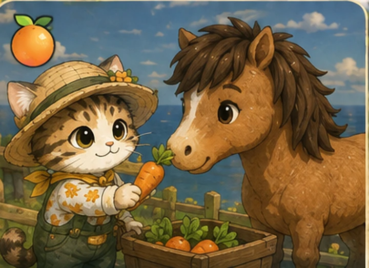
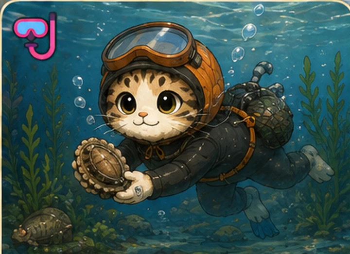
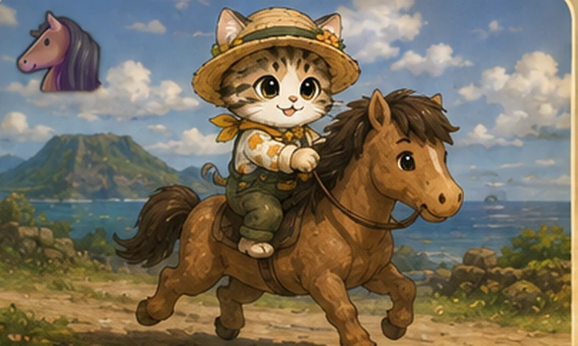
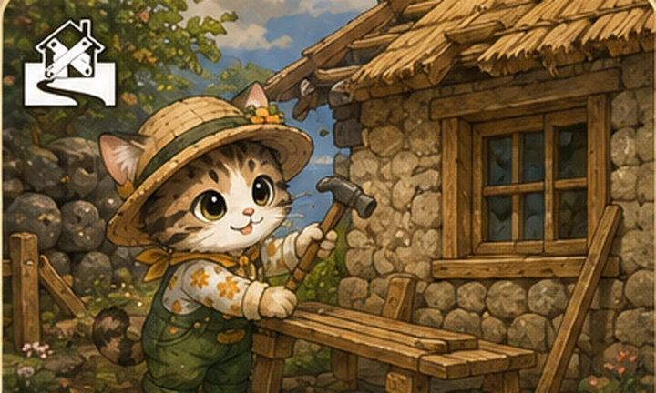

루루냥의 제주살이
서울 집값에 밀려 제주로 온 고양이
낡은 빈집에서 시작하는 두 번째 인생
이동
← ↑ ↓ → (방향키)
시야 회전
A D (올려보기 W S)
줌
Z 멀리 / X 가까이
달리기
Shift
점프
Space
상호작용
F
물속에서
F 채집 · ↑ 떠오르기 · ↓ 잠수 · ←→ 헤엄 · 수면에서 F 나가기
전체 지도
M (또는 🗺 배지)
왼쪽 아래
💾 저장 · 🗺 지도 · 🎵 음악
오른쪽 위
↻ 처음부터 다시하기
💵 0원
↻ 처음부터 다시하기
M 키나 화면을 누르면 닫힙니다
욕심내민 바당이 데려간다
DIE
🐾 누르면 다음
색을 누르면 바로 결제됩니다 · 바깥을 누르면 취소
화면을 누르면 건너뜁니다
💾
🎒
🎵
🥕 당근 0개
🧺 망사리 0/24
📦 상자 0/20
📦 상자에 가까이 가면 F로 잡을 수 있어요
루루냥의
🐾
제주살이
서울 집값에 밀려 제주로 온 고양이
낡은 빈집에서 시작하는 두 번째 인생
🍊

감귤 농사
🤿

해녀 물질
🐴

조랑말 경마
🏚

헌집 고치기
방향키
루루 이동
A D · W S
시야 돌리기 · 올려보기
Z X
줌
F
모든 상호작용 (따기·사기·상자·물질…)
M
전체 지도
Shift · Space
달리기 · 점프
왼쪽 화면
끌면 루루가 걸어갑니다
오른쪽 화면
끌면 시야가 돌아갑니다
두 손가락
벌리고 오므리면 줌
🐾 버튼
모든 상호작용 (따기·사기·상자·물질…)
🗺 배지
전체 지도
🎵 배지
누르면 배경음악 꺼짐
🐾
눌러서 시작
🐾
🐾
행동
💨
달리기
⤴
점프
지금은
루루 그림과 성산일출봉 그림이 안 보이는 상태
입니다.
브라우저 보안 규칙 때문에, html 파일을 그냥 더블클릭하면 그림 파일을 화면에 입힐 수 없습니다.
폴더에 있는
「루루3D실행.bat」
을 더블클릭해서 열어주세요.
(작은 서버를 켜고 같은 화면을 여는 것뿐이라 하시던 대로 하시면 됩니다)